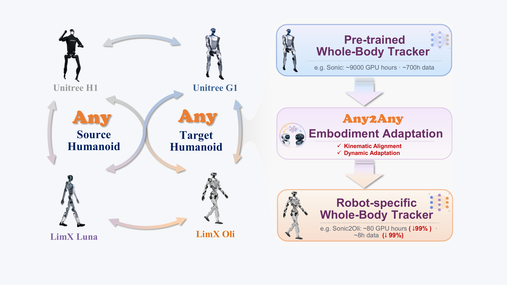
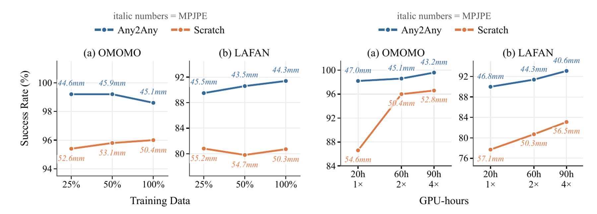

Kinematic Alignment
Aligns observation layout, joint semantics, hip-axis geometry, and closed-chain coupling before policy reuse.
Whole-body tracking models are becoming reusable motor priors for humanoid robots, but training a high-quality tracker from scratch is expensive and embodiment-specific. Any2Any studies whether pretrained WBT specialists can transfer to new humanoids with minimal adaptation. The framework first performs kinematic alignment to reconcile observation, reference, and action spaces across embodiments, then applies lightweight dynamics adaptation through LoRA modules inserted into dynamics-sensitive parts of the frozen policy.
Across Sonic and Oli-WBT source backbones, Any2Any evaluates six cross-embodiment transfer instances over LimX Oli, LimX Luna, Unitree G1, and Unitree H1, achieving strong tracking performance with a small fraction of the original data and compute.
A pretrained whole-body tracker can be reused on a new humanoid through embodiment adaptation, reducing the target-side training cost from large-scale pretraining to compact post-training.

Any2Any decomposes cross-embodiment transfer into kinematic alignment, which maps observation and action semantics across robot morphologies, and dynamics adaptation, which fine-tunes lightweight LoRA modules for target-specific dynamics.

Aligns observation layout, joint semantics, hip-axis geometry, and closed-chain coupling before policy reuse.
Freezes the pretrained WBT backbone and trains low-rank LoRA factors on target-specific dynamics pathways.
Sonic transfer motions on LimX Oli, LimX Luna, and Unitree H1 in simulation, including Oli dance clips.
Oli-WBT2 transfer motions on Unitree G1, Unitree H1, and LimX Luna in simulation.
Sonic transfer motions on LimX Oli in real-world deployment.
Any2Any maintains higher success rates than training from scratch under reduced data and GPU-hour budgets.

@article{yang2026any2any,
title = {Any2Any: Efficient Cross-Embodiment Transfer for Humanoid Whole-Body Tracking},
author = {Yang, Ming and Yu, Tao and Li, Feng and Chen, Hua},
journal = {arXiv preprint arXiv:2605.23733},
year = {2026},
url = {https://arxiv.org/abs/2605.23733}
}